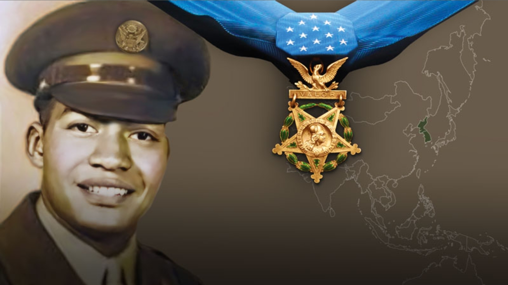
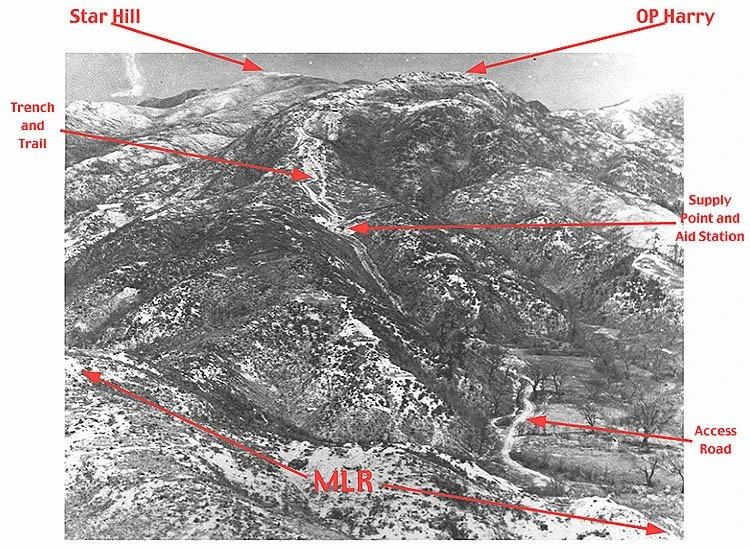
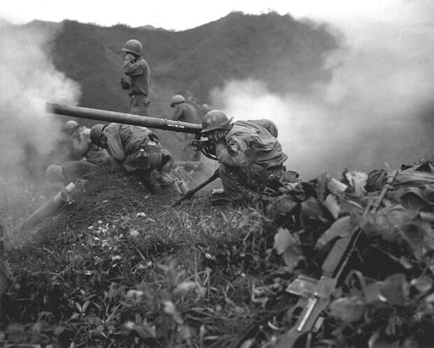
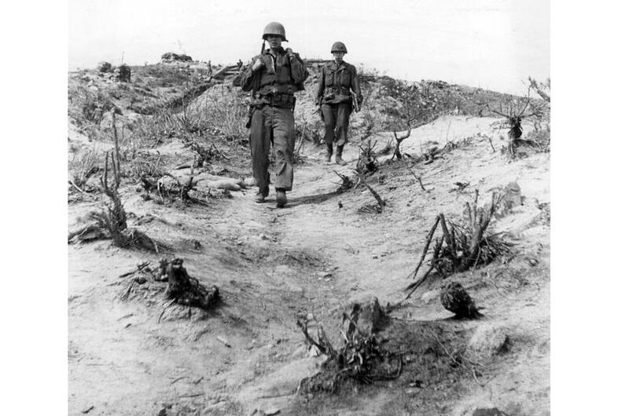
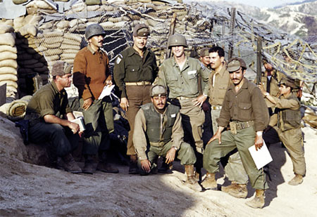

His sister begged him to join the Army Band and stay safe. He told her: “If other mothers’ sons have to fight, I feel I need to do the same thing.” On the night of June 11, 1953, outnumbered thirty to one on a hill called Outpost Harry, Pfc. Charles R. Johnson proved he meant every word — and gave everything he had so ten other men could live.

Charles Robert Johnson was born on August 11, 1932, in Millbrook, New York — a small Hudson Valley town in Dutchess County where everybody knew everybody and character was measured by how you treated your neighbors. His family called him “Buddy.” It fit. He was the third of six children, raised by Robert and Pearl Johnson in a home where hard work and decency were the only currencies that mattered.
Charlie Johnson was the kind of boy who made everything look natural. He lettered in football, excelled in baseball and basketball. He played trumpet. He sang in the choir. When his family moved and he transferred to Arlington High School in LaGrangeville for his senior year, he didn’t fade into the background — he was elected class vice president and co-captain of the basketball team. His classmates voted him the Babe Ruth Award for good sportsmanship and fair play. He was, by every account, exactly the kind of young man a community builds itself around.
After graduating, he enrolled at Howard University in Washington, D.C., played football for their team, and seemed to have every road ahead of him open and waiting.
In 1952, the United States Army drafted him.
When the Army drafted Charlie Johnson, his sister Geraldine saw an opening. The Army Band needed musicians, and Charlie could play. She urged him to go that route — to serve, yes, but to serve in a way that kept him away from the front lines. It was a reasonable thing for a sister to ask. It was a reasonable thing for a young man with his whole life ahead of him to accept.
Charlie Johnson turned it down.
If other mothers’ sons have to fight, I feel I need to do the same thing.
— Pfc. Charles R. Johnson, to his sister Geraldine, 1952Those twelve words are the whole man. Not bravado. Not a death wish. A sense of fairness so deep it outweighed his own survival instinct. Other young men — men without his gifts, men with fewer options, men whose sisters weren’t offering them a way out — were going to Korea to fight. Charlie Johnson decided that if they had to go, so did he.
He was assigned as a Browning Automatic Rifleman to Company B, 15th Infantry Regiment, 3rd Infantry Division. The 3rd Division carried one of the proudest records in the U.S. Army — the “Rock of the Marne,” the unit that had stopped the last German offensive of World War I, and the division that produced Audie Murphy. Charlie Johnson arrived as part of something else historic: the racial integration of the United States military, ordered by President Truman just four years before and still very much in progress. He was among the first generation of Black soldiers to serve in fully integrated Army units.

In the final weeks of the Korean War — the armistice was just six weeks away — both sides were still fighting ferociously for terrain that would define the ceasefire line. Outpost Harry was Hill 420, a strategically critical piece of ground in the Iron Triangle about 60 miles northeast of Seoul. The Americans and their allies, including a Greek “Sparta” Battalion carrying the memory of Thermopylae, held it. The Chinese wanted it.
On the night of June 10–11, 1953, the Chinese launched a massive assault. More than 3,600 enemy troops — a reinforced regiment — attacked the outpost. By morning, according to surviving accounts, all but a handful of the American defenders had been killed or severely wounded. Company B, 15th Infantry was committed to reinforce.
Charlie Johnson and his squad entered that fight.
All total, there was a reinforced PVA regiment of approximately 3,600 enemy trying to kill us.
— Capt. Martin Markley, survivor, Outpost Harry, June 1953

The trenches and bunkers on Outpost Harry became a killing ground. Overwhelming numbers of Chinese troops assaulted the positions defended by Johnson and his squad. Artillery hit their bunker directly. Grenades came in after. Men went down around him. The situation was beyond desperate — it was the kind of fight that infantry soldiers train their whole careers hoping never to face.
Charlie Johnson, already wounded, did not stop.
The official Medal of Honor citation records what Charles Johnson did in those hours with the measured language of military documentation. The men who were there remember it differently — as the most selfless act of human courage they ever witnessed.
Hit by a direct artillery strike on his bunker, then wounded again by a grenade thrown inside it, Johnson ignored his own injuries and began administering first aid to the men around him who were more gravely hurt. Under direct artillery, mortar, and small arms fire, he dragged a wounded comrade through the trenches to a safer position, stopping to clear enemy soldiers from his path in close combat. His comrade was Donald Dingee — his classmate from Arlington High School, the boy he had grown up alongside in the Hudson Valley, now bleeding out in a trench in Korea.
He pulled Don through that trench and got him to safety. Then he went back out. That’s who Charlie was.
— Testimony of soldiers present, Outpost Harry, June 1953With his men pinned down, surrounded, and ammunition nearly exhausted, Johnson assessed the situation and made a decision. He left the relative safety of the bunker. He went out alone to find weapons and ammunition, and he placed himself physically between his comrades and the oncoming Chinese forces — one man, already wounded twice, holding a line so that others could survive long enough for reinforcements to arrive.
In the early hours of June 12, 1953, a Chinese grenade killed him.
The men he shielded lived. Survivors credited his actions with saving the lives of nine to ten soldiers. Donald Dingee — the boy he had pulled through the trench — came home.
Charlie Johnson was buried at Nine Partners Cemetery in Millbrook, New York — the same small Hudson Valley town where he was born. He was twenty years old. For fifty-seven years, he had no military decoration of any kind. The men who survived Outpost Harry knew what he had done. His family knew. His community knew. The Army, in the chaos and paperwork of a war that ended six weeks after he died, did not formally record it.
In 2010, advocates from his old high school — teachers, students, classmates of classmates — finally secured him a Silver Star. It was the third-highest military award for gallantry in combat. It was not enough. For the next fifteen years, the Arlington High School community, his family, and eventually a United States Congressman fought to have that Silver Star upgraded to what it should have been from the beginning.
On January 3, 2025, President Biden placed the Medal of Honor — posthumously — in the hands of Charlie Johnson’s sister, Juanita Mendez. Seventy-two years after her brother stepped out of that bunker.
It’s just so great to hear his story being told to the broader nation at large — and hopefully inspire everyone the way it’s inspired us in the family over all these years.
— Trey Mendez, nephew of Pfc. Charles R. Johnson, January 3, 2025At Arlington High School, there is a hall named for him. On the wall hangs a bronze statue of a soldier pulling a wounded man through a trench. The soldier is Charlie Johnson. The wounded man is Don Dingee. Every student who walks past it sees what it looks like when a person decides that someone else’s life matters more than their own.

The Best of America™ Archive records Charles Johnson’s name here because this is exactly who the archive exists for. Not the famous. Not the household names. The twenty-year-old from Millbrook who played trumpet and sang in the choir and decided that if other mothers’ sons had to fight, he did too — and who, in the last hours of his life, proved that he had meant it absolutely.
He is The Best of America. He always was. It just took the rest of us 72 years to say it loud enough.
“If other mothers’ sons have to fight, I feel I need to do the same thing.” He said it. He meant it. He proved it. The Best of America™ will not forget him again.”
This profile has no sponsor yet — and heroes like Pfc. Johnson deserve to be remembered forever.
Become a Founding Local Patriot Business™ → · Sponsor this profile and ensure no American hero is ever forgotten